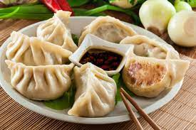

Recipe for Dumplings

Description
A step by step recipe made by TASTY on how to make the perfect dumplings
at home whether you have cooking experience or not!
Ingredients
- 4 cups all purpose flour
- 2 cups red cabbage
- 2 cups green onion sliced
- 6 cloves garlic, minced
- 4 tablespoons ginger, minced
- 1/2 lb shrimp, peeled and deveined
For more detailed ingredient+instructionpage, visit Ingredients
Steps to Make our Dumps!
- In a large bowl, combine the flour, 1 teaspoon of salt, and the
warm water and mix until well-combined.
- Roll out dough on a floured surface and knead until smooth.
- Divide the dough into 4 equal parts
- Roll out 1 piece of dough into a thin log and divide into 6 or
8 pieces, depending on the size of dumplings you want. Repeat with
the remaining dough portions.
- For final instructions, please visitPreparation